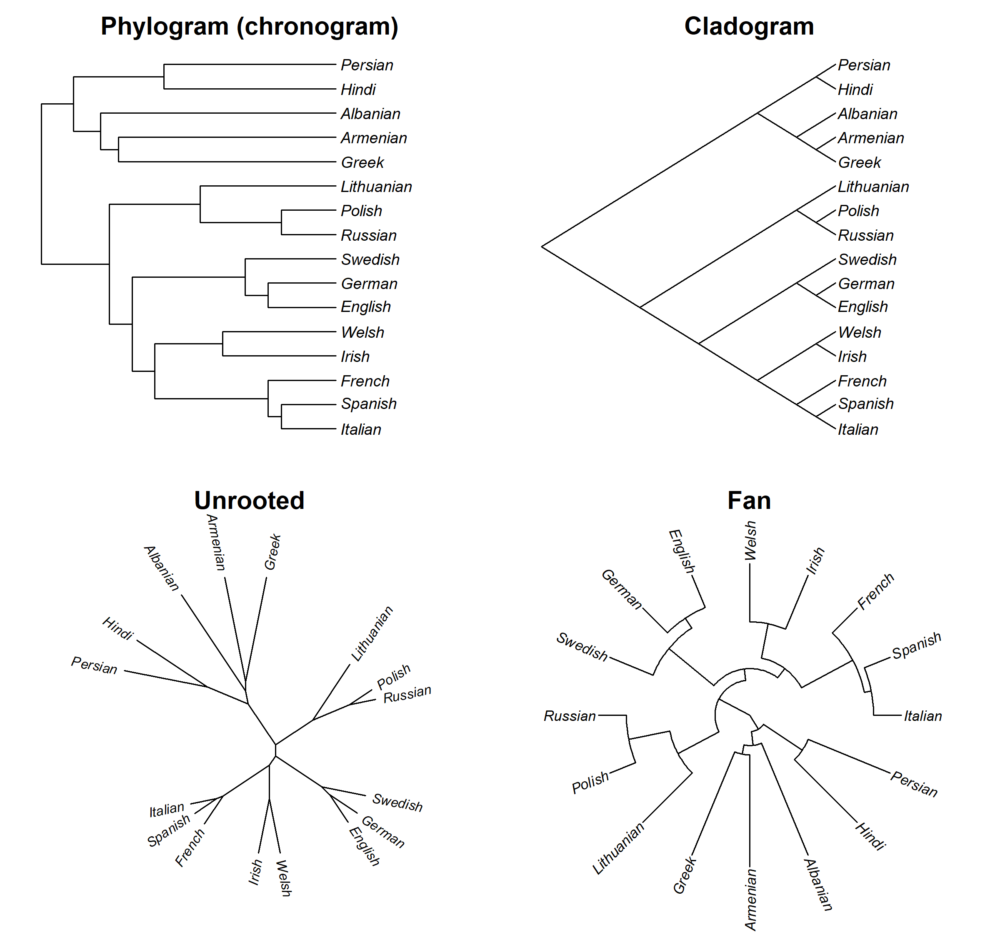
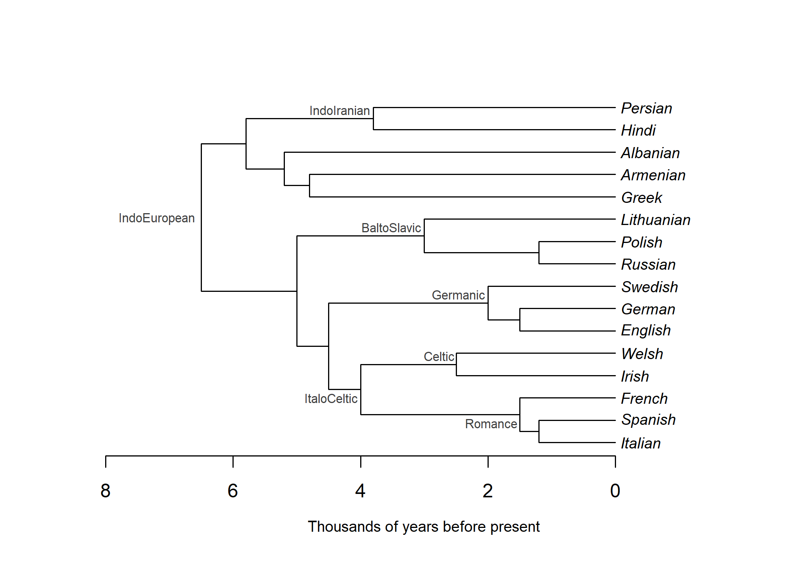
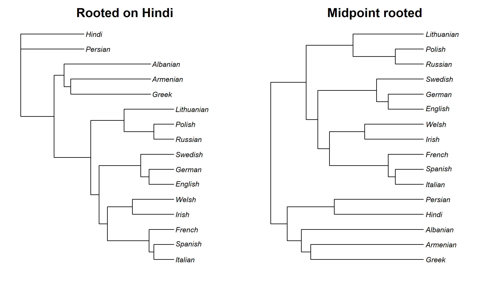
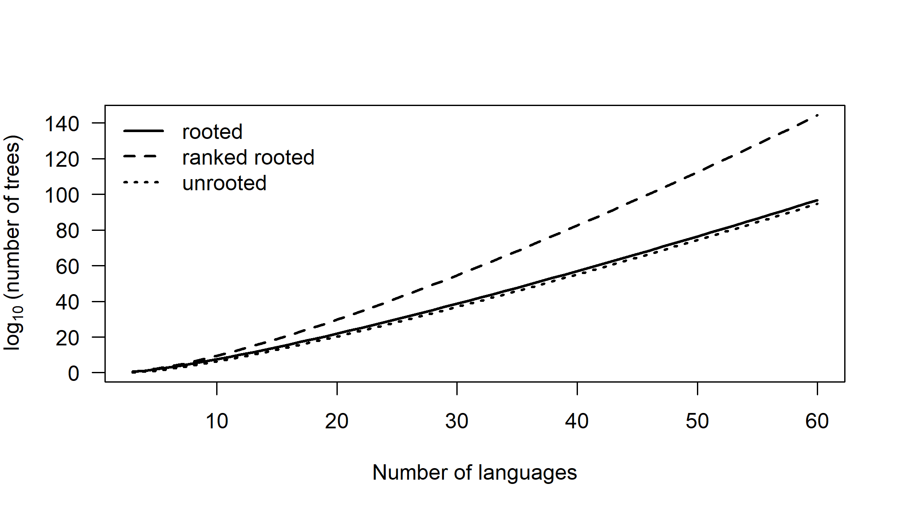
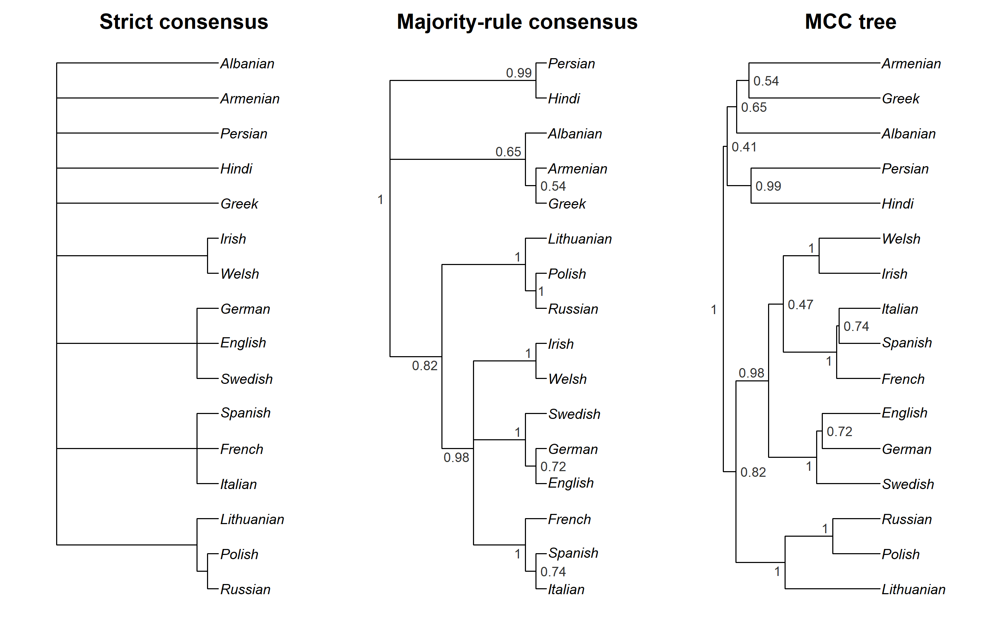
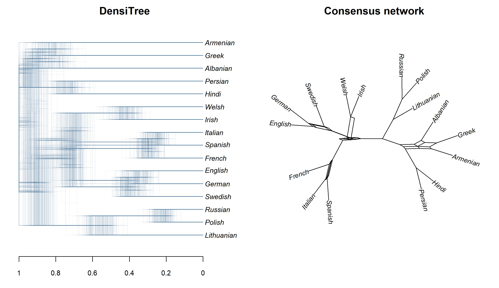
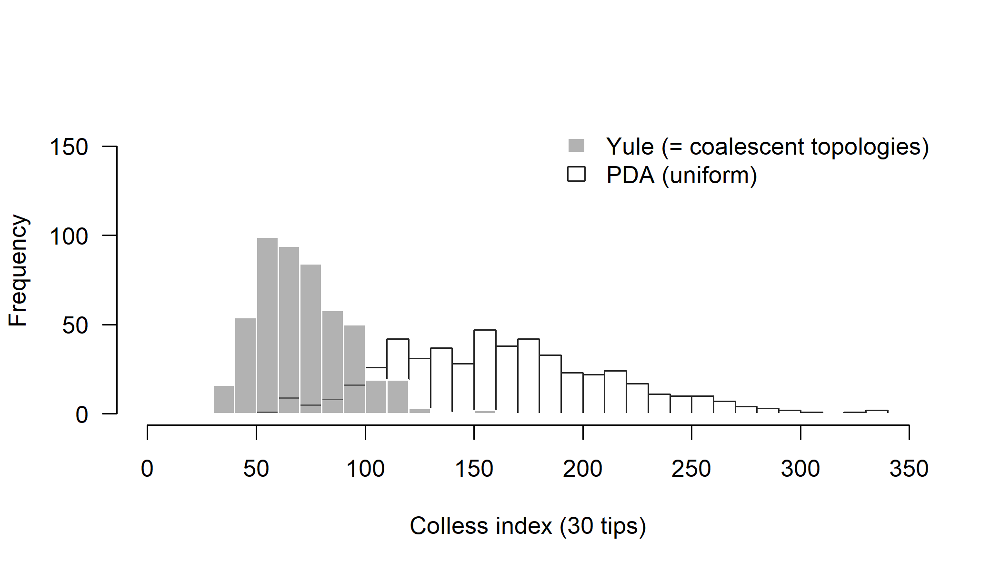
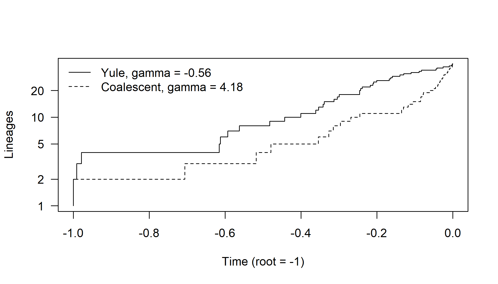
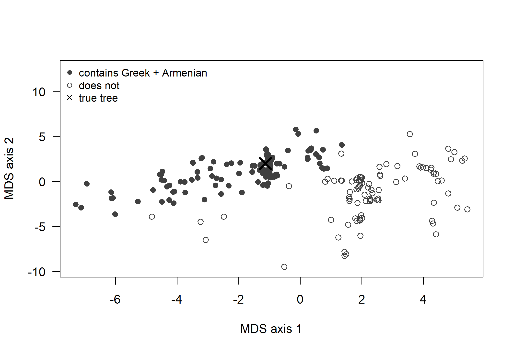

Chapter 2 Trees, Networks and Tree Space
Every method in this book takes linguistic data and returns a tree, a set of trees, or a network. To read such results critically we need a precise vocabulary: what a node, a clade, a root and a branch length mean, and what each corresponds to in historical linguistics (a node is a proto-language, a clade is a subgroup). We also need to know how trees are stored and handled in R, why the number of possible trees makes inference hard, and how a sample of thousands of trees is summarized and compared without hiding its uncertainty. Throughout, R code with ape and phangorn works on a small Indo-European example.
After reading this chapter you should be able to:
- explain the anatomy of a phylogenetic tree (tips, internal nodes, clades, roots, branch lengths) and relate each part to its counterpart in historical linguistics;
- distinguish cladograms, phylograms and chronograms, crown and stem ages, and hard and soft polytomies;
- read, write, plot, prune, root and query trees in R with ape and phangorn, from Newick strings, NEXUS files and Glottolog-style classifications;
- explain why the number of possible trees forces heuristic search or sampling;
- represent a tree as a set of splits and test whether a cognate character is compatible with it;
- summarize a sample of trees with consensus and MCC trees, and say what each summary hides;
- choose and compute an appropriate tree distance (RF, quartet, branch-score) for a given comparison, and describe tree shape with balance indices and LTT plots.
2.1 The anatomy of a tree
2.1.1 Graphs, nodes and branches
Mathematically, a phylogenetic tree is a graph: a set of vertices (in phylogenetics usually called nodes) joined by edges (usually called branches). A graph is a tree if it is connected and contains no cycles, so that there is exactly one path between any two nodes. The nodes of degree one, which have only a single branch attached, are the tips, leaves or terminal nodes; these are the observed taxa. In linguistic phylogenetics the taxa are languages, dialects or, occasionally, historical stages of a language (Old English, Middle English, Modern English) or even individual manuscripts. Biologists sometimes call them operational taxonomic units (OTUs), a term from numerical taxonomy (Sokal and Sneath 1963). The remaining nodes are internal nodes. An internal node represents a hypothetical ancestor, sometimes called a hypothetical taxonomic unit (HTU). In a language tree an internal node is a proto-language: Proto-Germanic, Proto-Romance (essentially late spoken Latin), Proto-Oceanic, Proto-Bantu.
The degree of a node is the number of branches attached to it. In a binary (or bifurcating, or fully resolved) tree every internal node has degree three: one branch leading back towards the ancestor and two leading to descendants. (The root of a rooted tree is the exception, with only two branches.) If an internal node has more than two descendants, it is a polytomy (or multifurcation). Biologists distinguish two kinds. A hard polytomy is a claim about history: three or more lineages really did diverge from one ancestor at effectively the same time, as might happen when a dialect continuum breaks up rapidly into several separately developing varieties. A soft polytomy is a statement of ignorance: the data are insufficient to resolve the order of branching. Most polytomies in linguistic classifications are soft. When a handbook lists the primary branches of Indo-European as a flat list of a dozen subgroups, it does not claim that Proto-Indo-European split into twelve daughters simultaneously; it records that the comparative method has not established a consensus higher-order structure. The distinction matters because many algorithms treat polytomies as if they were hard, and some comparative methods require fully resolved trees (Chapter 13).
2.1.3 Roots, rooting and outgroups
A tree is rooted if one node is designated as the ancestor of all others; the branches then acquire a direction, from older to younger. An unrooted tree specifies only which tips are closer to which, without saying where the ancestor was. Many inference methods, including all time-reversible substitution models used in maximum likelihood (Chapter 5) and standard parsimony (Chapter 4), cannot by themselves detect the position of the root: they return an unrooted tree, and the root has to be placed by some other argument. There are several ways of doing so.
Outgroup rooting is the standard approach in biology. One or more taxa known to lie outside the group of interest (the ingroup) are included, and the root is placed on the branch joining the outgroup to the ingroup. Outgroup rooting is difficult in linguistics. Language families are, by definition, the largest units whose relatedness can be demonstrated; there is usually no language outside a family that is demonstrably related to it, so no proper outgroup exists. An unrelated language added to the analysis would share with the ingroup only chance resemblances and would attach essentially at random. Linguists therefore usually root trees in other ways. One is to use prior knowledge of the first split, for example by constraining the Anatolian languages to be the sister of the rest of Indo-European, or by requiring Formosan lineages to branch off first in Austronesian. A second is clock rooting: under a molecular-clock model (Chapter 9) the root is the point from which all tips are equidistant in time (after allowing for the ages of ancient tips), and the root position becomes an estimable parameter. A third is the use of directional models such as the stochastic Dollo model, under which cognate classes are born once and then lost; this asymmetry carries information about the root (Chapter 7). Midpoint rooting places the root at the midpoint of the longest path between two tips. It is a cheap heuristic that works only if rates of change are roughly equal across lineages.
2.1.4 Branch lengths: cladograms, phylograms and chronograms
Trees differ in what, if anything, their branch lengths mean. A cladogram conveys only topology: branch lengths are arbitrary and drawn for legibility. A phylogram (or additive tree) has branch lengths proportional to the amount of change, typically the expected number of changes per character; with lexical data this is roughly the expected number of cognate replacements per meaning. A chronogram (or time tree) has branch lengths in units of time, such as years or millennia. When all tips are contemporaneous and branch lengths are in time, every root-to-tip path has the same length and the tree is ultrametric. Trees containing ancient languages such as Hittite, Tocharian, Latin or Old Irish are chronograms but not ultrametric, because those tips are older than the present; Chapter 10 shows how such dated tips, placed at the time of their attestation, are used to calibrate the clock. A phylogram becomes a chronogram only through a clock model, which converts amounts of change into time by modeling how rates vary (Chapter 9).
Two further concepts recur. The height of a node in a chronogram is its age, measured back from the present (or from the youngest tip); the root height is the age of the proto-language at the root. The stem of a clade is the branch leading to its MRCA from the parent node, and the crown of a clade is the subtree descending from the MRCA of its sampled members. The distinction is not mere pedantry. A date for “Proto-Germanic” can mean either the age of the crown node, the last common ancestor of all attested Germanic languages, or the age of the stem, when the pre-Germanic lineage separated from its sister. These can differ by thousands of years. Published linguistic dates almost always refer to crown ages, but readers should check. Crown ages also depend on sampling: if the only sampled Germanic languages were English, Dutch and German, the crown age of “Germanic” in the tree would really be the age of West Germanic.
2.1.5 A first look in R
The ape package represents a tree as an object of class phylo (Paradis and Schliep 2019; Paradis 2012). Its core is an edge matrix with one row per branch and two columns giving the parent and child node numbers. Tips are numbered 1 to \(n\) and internal nodes \(n+1\) upwards, the root being node \(n+1\). A vector of tip.labels, an optional edge.length vector and optional node.labels complete the object. The phangorn package (Schliep 2011) adds tree inference and many utilities, and phytools (Revell 2012) and ggtree (Yu et al. 2017) add comparative methods and flexible plotting.
We read a toy Indo-European tree with sixteen modern languages from a Newick string (the format is described in Section 2.2). The topology follows widely accepted low-level subgroups, but the higher-level structure and all branch lengths, measured in millennia, are invented for illustration and are not an estimate of the real history.
library(phangorn)
ie_nwk <- paste0(
"((((((Italian:1.2,Spanish:1.2):0.3,French:1.5)Romance:2.5,",
"(Irish:2.5,Welsh:2.5)Celtic:1.5)ItaloCeltic:0.5,",
"((English:1.5,German:1.5):0.5,Swedish:2.0)Germanic:2.5):0.5,",
"((Russian:1.2,Polish:1.2):1.8,Lithuanian:3.0)BaltoSlavic:2.0):1.5,",
"(((Greek:4.8,Armenian:4.8):0.4,Albanian:5.2):0.6,",
"(Hindi:3.8,Persian:3.8)IndoIranian:2.0):0.7)IndoEuropean;")
ie <- read.tree(text = ie_nwk)
ie#>
#> Phylogenetic tree with 16 tips and 15 internal nodes.
#>
#> Tip labels:
#> Italian, Spanish, French, Irish, Welsh, English, ...
#> Node labels:
#> IndoEuropean, , , ItaloCeltic, Romance, , ...
#>
#> Rooted; includes branch length(s).#> tips internal branches
#> 16 15 30#> rooted binary ultrametric
#> TRUE TRUE TRUE#> [,1] [,2]
#> [1,] 17 18
#> [2,] 18 19
#> [3,] 19 20
#> [4,] 20 21
#> [5,] 21 22
#> [6,] 22 1A rooted binary tree with \(n\) tips has \(n-1\) internal nodes and \(2n-2\) branches; an unrooted binary tree has \(n-2\) internal nodes and \(2n-3\) branches. Our tree, with 16 tips, has 15 internal nodes and 30 branches. Figure 2.1 shows four ways of drawing the same object. The choice of drawing style is cosmetic: rotating the two descendants of any node, or switching from a rectangular to a circular layout, changes nothing about the tree. This simple fact is worth stating because readers often over-interpret the vertical order of tips in a figure, which carries no information, as if adjacent tips were more closely related. In the phylogram, Albanian is drawn next to Armenian, but it is no more closely related to Armenian than to Greek.
Two further misreadings are common (Baum and Smith 2013). One is node counting: the number of nodes on the path between two tips depends on how many other languages happen to be sampled, whereas relatedness is defined only by the recency of the most recent common ancestor. The other is a residue of what Baum and Smith call ladder thinking: describing a lineage that branches off near the root, such as Anatolian in Indo-European or a Formosan language in Austronesian, as “basal”, “archaic” or “primitive”. Every living language has been evolving for exactly as long as the languages of its sister lineage, and lexical conservatism (Icelandic beside English, for instance) is a matter of rate, not of closeness to the ancestor (Section 4.3). In the same way, a cladogram orders in time only nodes that lie on the same root-to-tip path; two nodes in different parts of the tree cannot be ranked by age from the drawing.
op <- par(mfrow = c(2, 2), mar = c(1, 1, 2, 1), cex = 1) # cex after mfrow: keep text legible
plot(ie, cex = 0.75, label.offset = 0.1, main = "Phylogram (chronogram)")
plot(ie, type = "cladogram", use.edge.length = FALSE, cex = 0.75,
label.offset = 0.1, main = "Cladogram")
# radial layouts: wider margins, and labels may run into them rather than
# being clipped
par(mar = c(1.5, 1.5, 2.5, 1.5), xpd = NA)
plot(unroot(ie), type = "unrooted", cex = 0.66, lab4ut = "axial",
label.offset = 0.3, main = "Unrooted")
plot(ie, type = "fan", cex = 0.7, label.offset = 0.1, main = "Fan")
Figure 2.1: The same toy Indo-European tree drawn as a phylogram (branch lengths proportional to time), a cladogram (topology only), an unrooted tree, and a fan. The topology of low-level subgroups is conventional; the deeper structure and the branch lengths are invented for illustration.
Because our tree is a chronogram, we can add a time axis and the labels of named internal nodes (Figure 2.2). The function branching.times() returns node heights, which for an ultrametric tree are node ages.
plot(ie, cex = 0.8, label.offset = 0.08, x.lim = c(-1.3, 8.3))
# each name sits on its stem branch, on the side away from the parent's
# vertical line
lp <- get("last_plot.phylo", envir = .PlotPhyloEnv)
nn <- Ntip(ie) + seq_len(Nnode(ie))
up <- lp$yy[nn] >= lp$yy[ie$edge[match(nn, ie$edge[, 2]), 1]]
for (i in seq_along(nn)) {
a <- if (i == 1) c(1.08, 0.5) else if (up[i]) c(1.05, -0.4) else c(1.05, 1.4)
nodelabels(ie$node.label[i], nn[i], frame = "none", adj = a,
cex = 0.65, col = "grey25")
}
axisPhylo(backward = TRUE)
mtext("Thousands of years before present", side = 1, line = 2.5, cex = 0.8)
Figure 2.2: The toy Indo-European chronogram with named internal nodes (proto-languages) and a time axis in millennia before present. Node ages are invented for illustration.
#> IndoEuropean Germanic Romance
#> 6.5 2.0 1.5The common manipulations of trees are all one-liners in ape and phangorn. drop.tip() prunes taxa, which is how a large published tree is matched to the languages for which a comparative dataset has data (Chapter 13); extract.clade() pulls out a subtree; getMRCA() and is.monophyletic() query relationships; root(), unroot() and midpoint() change the rooting; ladderize() and rotate() change only the drawing order; di2multi() collapses very short branches into polytomies; and multi2di() resolves polytomies arbitrarily into zero-length branches.
#> [1] TRUE#> [1] FALSE#> [1] 24#> [1] "Germanic"#> [[1]]
#> [1] 9 10 11#> [1] 13#> [1] "English" "German" "Swedish"#> [1] "(((((Italian:1.2,Spanish:1.2,French:1.5)Romance:2.5,(Irish:2.5,Welsh:2.5)Celtic:1.5)ItaloCeltic:0.5,((English:1.5,German:1.5):0.5,Swedish:2)Germanic:2.5):0.5,((Russian:1.2,Polish:1.2):1.8,Lithuanian:3)BaltoSlavic:2):1.5,(((Greek:4.8,Armenian:4.8):0.4,Albanian:5.2):0.6,(Hindi:3.8,Persian:3.8)IndoIranian:2):0.7)IndoEuropean;"u <- unroot(ie)
r_hindi <- root(u, outgroup = "Hindi", resolve.root = TRUE)
r_mid <- midpoint(u)
op <- par(mfrow = c(1, 2), mar = c(1, 1, 2, 1))
plot(r_hindi, cex = 0.7, label.offset = 0.1, main = "Rooted on Hindi")
plot(r_mid, cex = 0.7, label.offset = 0.1, main = "Midpoint rooted")
Figure 2.3: Rooting. Left: the unrooted version of the toy tree, rerooted on the branch to Hindi as if it were an outgroup, which misplaces the origin of the family inside Indo-Iranian. Right: midpoint rooting, which recovers the original root here because the tree is ultrametric.
Figure 2.3 illustrates a point that is easily forgotten: an unrooted tree is compatible with as many rooted trees as it has branches, and an unjustified root can produce a very misleading picture of history. Rooted on Hindi, the toy tree implies that the family began in the Hindi lineage and that Persian is the sister of all other branches.
2.2 Storing trees: Newick, NEXUS and their extensions
2.2.1 The Newick format
The Newick format represents a tree as nested parentheses. (It is named after a restaurant in Dover, New Hampshire, where a group of authors of phylogenetic software agreed on it in 1986.) Each pair of parentheses encloses the descendants of one internal node, sister subtrees are separated by commas, and the whole string is terminated by a semicolon. A tip label may be followed by a colon and a branch length; an internal node’s label and branch length follow its closing parenthesis. Thus ((English:1.5,German:1.5):0.5,Swedish:2.0)Germanic; describes a three-tip clade named Germanic in which English and German are sisters, each 1.5 units from their common ancestor, which is in turn 0.5 units from the Germanic root. Because the string is a nested list, any rooted tree has many equivalent Newick strings, one for each way of ordering sisters. An unrooted tree is conventionally written with a basal trifurcation, (A,B,(C,D));, and many programs will silently treat a string with a basal bifurcation as rooted.
Newick is compact and universal but impoverished. It has no standard way to attach more than one value to a node, so programs have extended it by placing metadata inside square brackets, which Newick treats as comments. BEAST and TreeAnnotator, for example, write node annotations such as [&height_95%_HPD={4.1,6.9},posterior=0.97] immediately after the node, which the treeio package can parse into a table for plotting with ggtree (Wang et al. 2020; Yu et al. 2017). Explicit phylogenetic networks can be written in Extended Newick, in which a reticulation node that appears twice in the string is marked with a shared label such as #H1 (Cardona et al. 2008). Spaces, commas, colons, parentheses and semicolons in taxon names break Newick parsers; language names such as “Ngadha (Flores)” or “Ainu, Hokkaido” must be sanitized, typically by replacing problematic characters with underscores or by using Glottocodes as identifiers.
2.2.2 NEXUS
The NEXUS format is a modular container for phylogenetic data (Maddison et al. 1997). A NEXUS file begins with #NEXUS and is divided into blocks, each starting with BEGIN name; and ending with END;. The TAXA block lists taxon names; the CHARACTERS (or older DATA) block holds the data matrix together with a FORMAT statement declaring the data type, symbols and the codes for missing data and gaps; the TREES block holds one or more Newick trees, usually with a TRANSLATE table that maps short numerical codes to taxon names; and the ASSUMPTIONS and SETS blocks define character partitions, weights and taxon sets. Programs add their own blocks, such as the MRBAYES block of commands or the PAUP block. Linguistic cognate matrices are typically distributed as NEXUS files with DATATYPE=STANDARD and SYMBOLS="01", with character sets marking which binary characters belong to which meaning (Chapter 3). BEAST 2 uses its own XML input format, but its tree output (the .trees file of posterior samples) is NEXUS. XML-based alternatives such as NeXML were designed to make the semantics of data explicit and machine-verifiable (Vos et al. 2012), but NEXUS remains the lingua franca of linguistic phylogenetics. Two details of the standard matter for linguistic data. Within a matrix, parentheses and braces mean different things: (01) records a polymorphism, a language that has both states (for instance two synonyms from different cognate classes in a multistate character), whereas {01} records uncertainty about which single state applies; square brackets enclose comments (Maddison et al. 1997). Programs also differ in which blocks and commands they read: a block that one program uses may be ignored by another or stop it with an error, and many programs treat polymorphism and uncertainty identically, summing over the states in both cases. A matrix that has passed through several programs should be checked for what it still says.
tmp <- tempfile(fileext = ".nex")
write.nexus(ie, file = tmp)
cat(readLines(tmp)[-2], sep = "\n") # line 2 is a time stamp#> #NEXUS
#>
#> BEGIN TAXA;
#> DIMENSIONS NTAX = 16;
#> TAXLABELS
#> Italian
#> Spanish
#> French
#> Irish
#> Welsh
#> English
#> German
#> Swedish
#> Russian
#> Polish
#> Lithuanian
#> Greek
#> Armenian
#> Albanian
#> Hindi
#> Persian
#> ;
#> END;
#> BEGIN TREES;
#> TRANSLATE
#> 1 Italian,
#> 2 Spanish,
#> 3 French,
#> 4 Irish,
#> 5 Welsh,
#> 6 English,
#> 7 German,
#> 8 Swedish,
#> 9 Russian,
#> 10 Polish,
#> 11 Lithuanian,
#> 12 Greek,
#> 13 Armenian,
#> 14 Albanian,
#> 15 Hindi,
#> 16 Persian
#> ;
#> TREE * UNTITLED = [&R] ((((((1:1.2,2:1.2):0.3,3:1.5)Romance:2.5,(4:2.5,5:2.5)Celtic:1.5)ItaloCeltic:0.5,((6:1.5,7:1.5):0.5,8:2)Germanic:2.5):0.5,((9:1.2,10:1.2):1.8,11:3)BaltoSlavic:2):1.5,(((12:4.8,13:4.8):0.4,14:5.2):0.6,(15:3.8,16:3.8)IndoIranian:2):0.7)IndoEuropean;
#> END;#> [1] TRUE2.2.3 Classification trees with no branch lengths
A great deal of linguistic tree information comes not from phylogenetic inference but from expert classification. The Glottolog database, for instance, provides a genealogical classification of the world’s languages into families and subgroups, downloadable as Newick strings (Hammarström et al. 2024). Such trees have three features that distinguish them from inferred phylogenies: they have no branch lengths, they contain many (mostly soft) polytomies, and their internal nodes are named subgroups whose existence the classifiers consider established. When such a tree is used as the scaffold for a comparative analysis (Chapter 13), branch lengths must be invented. A common choice is Grafen’s method, which sets the height of each node proportional to the number of tips below it minus one (Grafen 1989); another is simply setting all branches to unit length. Polytomies can be retained, resolved randomly (and the analysis repeated over many random resolutions), or resolved into zero-length branches. None of these choices is neutral, and their effects should be checked by sensitivity analysis.
germ <- read.tree(text = paste0(
"(((English,West_Frisian)Anglo_Frisian,",
"(Dutch,German,Luxembourgish)Continental),",
"(Swedish,Danish,Norwegian,Icelandic,Faroese)North)Germanic;"))
is.binary(germ)#> [1] FALSE#> Germanic Anglo_Frisian Continental North
#> 1.000 0.444 0.111 0.222 0.444germ_resolved <- multi2di(germ, random = TRUE)
c(is.binary(germ_resolved), Nnode(germ), Nnode(germ_resolved))#> [1] 1 5 9The Glottolog-style tree above is a simplification for illustration only; real classifications of Germanic differ in detail.
2.3 How many trees are there?
Every phylogenetic method must, implicitly or explicitly, choose among the possible trees for the taxa at hand. The number of those trees grows faster than exponentially. There is only one unrooted binary tree for three tips, three for four tips, fifteen for five, and in general
\[\begin{equation} U(n) = 1 \times 3 \times 5 \times \cdots \times (2n-5) = (2n-5)!! \tag{2.1} \end{equation}\]
where \(!!\) denotes the double factorial (the product of every second integer). The number of rooted binary trees is
\[\begin{equation} R(n) = U(n+1) = (2n-3)!! = \frac{(2n-2)!}{2^{n-1}(n-1)!}. \tag{2.2} \end{equation}\]
These formulas have been known since the nineteenth century and were popularized among systematists by Felsenstein (1978b). For chronograms a further distinction matters: Bayesian tree priors such as the Yule and coalescent processes (Chapter 6) assign probabilities to ranked trees (also called labeled histories), in which the temporal order of the internal nodes is also specified, and there are more of these again: 18 ranked trees for four tips against 15 rooted ones.
The derivation of equations (2.1) and (2.2) by adding tips one at a time, and the formula for the number of ranked trees, are in Section B.1.1.
Table 2.1 shows how quickly these numbers grow. With 20 languages there are already more than \(10^{20}\) rooted trees; with the 87 Indo-European languages analyzed by Gray and Atkinson (2003) the number of rooted trees has more than 150 digits.
log10_dfact <- function(m) { # log10 of (2m - 1)!!, m >= 1
(lfactorial(2 * m) - m * log(2) - lfactorial(m)) / log(10)
}
log10_unrooted <- function(n) log10_dfact(n - 2) # (2n - 5)!!
log10_rooted <- function(n) log10_dfact(n - 1) # (2n - 3)!!
log10_ranked <- function(n) (lfactorial(n) + lfactorial(n - 1) -
(n - 1) * log(2)) / log(10)
n <- c(4, 5, 6, 8, 10, 16, 20, 50, 87, 400)
fmt <- function(x) ifelse(x < 15, format(round(10^x), big.mark = ",",
scientific = FALSE),
sprintf("%.2f x 10^%d", 10^(x - floor(x)), floor(x)))
tab <- data.frame(n = n,
unrooted = fmt(log10_unrooted(n)),
rooted = fmt(log10_rooted(n)),
ranked = fmt(log10_ranked(n)))
knitr::kable(tab, align = "rrrr",
col.names = c("Tips (n)", "Unrooted trees", "Rooted trees",
"Ranked rooted trees"),
caption = paste("Numbers of distinct binary trees for n labelled tips.",
"Four hundred tips is roughly the size of the largest Austronesian",
"and Bantu analyses."))| Tips (n) | Unrooted trees | Rooted trees | Ranked rooted trees |
|---|---|---|---|
| 4 | 3 | 15 | 18 |
| 5 | 15 | 105 | 180 |
| 6 | 105 | 945 | 2,700 |
| 8 | 10,395 | 135,135 | 1,587,600 |
| 10 | 2,027,025 | 34,459,425 | 2,571,912,000 |
| 16 | 213,458,046,676,875 | 6.19 x 10^15 | 8.35 x 10^20 |
| 20 | 2.22 x 10^20 | 8.20 x 10^21 | 5.64 x 10^29 |
| 50 | 2.84 x 10^74 | 2.75 x 10^76 | 3.29 x 10^112 |
| 87 | 6.66 x 10^152 | 1.14 x 10^155 | 6.60 x 10^236 |
| 400 | 7.32 x 10^981 | 5.84 x 10^984 | 7.94 x 10^1614 |
The practical consequences are profound. For more than a dozen or so taxa, exhaustive evaluation of all trees is impossible, and practical methods rely either on algorithms that build a tree directly (distance methods, Chapter 4), on heuristic searches that move through the space of trees by local rearrangements (parsimony and likelihood, Chapters 4 and 5), or on stochastic sampling (Bayesian MCMC, Chapter 6). Branch-and-bound algorithms can guarantee the optimal parsimony tree for up to a few dozen taxa, but no method can guarantee the global optimum for the hundreds of taxa in modern linguistic datasets. The enormity of tree space also explains why claims that a particular tree is “the” tree should be met with caution. Even a well supported tree is one point in an astronomically large space, and the posterior probability of any single complete topology is typically tiny, even when most individual clades are strongly supported.
nn <- 3:60
plot(nn, log10_ranked(nn), type = "n", xlab = "Number of languages",
ylab = expression(log[10]~"(number of trees)"), las = 1)
lines(nn, log10_rooted(nn), lty = 1, lwd = 2)
lines(nn, log10_ranked(nn), lty = 2, lwd = 2)
lines(nn, log10_unrooted(nn), lty = 3, lwd = 2)
legend("topleft", c("rooted", "ranked rooted", "unrooted"),
lty = 1:3, lwd = 2, bty = "n")
Figure 2.4: The number of rooted binary trees (solid), ranked rooted trees (dashed) and unrooted binary trees (dotted) as a function of the number of tips, on a log scale.
2.4 Splits, clusters and compatibility
2.4.1 Splits as the atoms of trees
Cut any single branch of an unrooted tree and the tips fall into two groups. This bipartition of the taxon set \(X\) into two non-empty, disjoint subsets \(A\) and \(B = X \setminus A\) is called a split, written \(A \mid B\). Every branch induces exactly one split. Branches leading to tips induce trivial splits, which separate one taxon from all the others and are present in every tree; the interesting information is in the non-trivial splits induced by internal branches. An unrooted binary tree on \(n\) tips has \(n-3\) internal branches and therefore \(n-3\) non-trivial splits. In a rooted tree the analogous object is the cluster (or clade): the set of tips below a node. A rooted binary tree on \(n\) tips has \(n-2\) non-trivial clusters, excluding the full set and the single tips.
Splits are fundamental because a tree is completely determined by its set of splits. This is the splits-equivalence theorem, which goes back to Buneman (1971) and is treated in detail by Semple and Steel (2003). It says that a collection of splits corresponds to a tree if and only if every pair of splits in the collection is compatible, and that the tree is then unique. Two splits \(A_1 \mid B_1\) and \(A_2 \mid B_2\) are compatible if at least one of the four intersections \(A_1 \cap A_2\), \(A_1 \cap B_2\), \(B_1 \cap A_2\) and \(B_1 \cap B_2\) is empty. Intuitively, compatible splits are nested: one side of one split lies entirely within one side of the other. For rooted clusters the condition is simpler: two clusters are compatible if they are disjoint or one contains the other. A set of pairwise compatible clusters forms a hierarchy, which is exactly a rooted tree.
The link to linguistics is direct. A binary cognate character, coded 1 for languages that have a reflex of a given cognate set and 0 for those that do not, is itself a split of the languages. If every cognate set arose once and was never borrowed or lost in parallel, the splits defined by the characters would all be compatible with the true tree, and the tree could be read off the data by assembling compatible splits. This is the idea behind perfect phylogeny and character compatibility methods, which Ringe, Warnow and Taylor applied to Indo-European (Chapter 4) (Ringe et al. 2002). Real data contain incompatible characters: borrowing, parallel semantic change and coding errors create splits that conflict with the tree. A collection of mutually incompatible splits cannot be drawn as a tree, but it can be drawn as a split network (Section 2.9 and Chapter 8), in which a set of parallel edges represents each split.
In R, prop.part() (ape) returns the clusters of a rooted tree, and as.splits() (phangorn) the splits, in a compact representation in which each split is stored by the set of tips on one side.
#> [1] 31sp_nontrivial <- sp[lengths(sp) > 1 & lengths(sp) < Ntip(ie) - 1]
length(sp_nontrivial) # n - 3 non-trivial splits of the unrooted tree#> [1] 14#> [[1]]
#> [1] "Italian" "Spanish" "French" "Irish" "Welsh"
#> [6] "English" "German" "Swedish" "Russian" "Polish"
#> [11] "Lithuanian"
#>
#> [[2]]
#> [1] "Italian" "Spanish" "French" "Irish" "Welsh" "English"
#> [7] "German" "Swedish"
#>
#> [[3]]
#> [1] "Italian" "Spanish" "French" "Irish" "Welsh"
#>
#> [[4]]
#> [1] "Italian" "Spanish" "French"Testing compatibility is easy to implement directly from the definition, which shows how a cognate character can be checked against a tree:
compatible_splits <- function(A1, A2, X) {
B1 <- setdiff(X, A1); B2 <- setdiff(X, A2)
any(c(length(intersect(A1, A2)), length(intersect(A1, B2)),
length(intersect(B1, A2)), length(intersect(B1, B2))) == 0)
}
X <- ie$tip.label
balto_slavic <- c("Russian", "Polish", "Lithuanian")
# A character shared by the Balto-Slavic and Germanic languages is
# compatible with Balto-Slavic as a subgroup...
compatible_splits(balto_slavic, c(balto_slavic, "English", "German",
"Swedish"), X)#> [1] TRUE# ...but a character shared by Lithuanian and the Germanic languages,
# excluding the other Slavic languages, is not.
compatible_splits(balto_slavic, c("Lithuanian", "English", "German",
"Swedish"), X)#> [1] FALSEThe second hypothetical character, if it were real, would have to be explained by borrowing between Baltic and Germanic, by parallel innovation, or by loss in the Slavic languages of a cognate inherited from an older ancestor. Note that the third explanation does not create genuine incompatibility on a rooted tree in which the cognate set predates Balto-Slavic. Whether a pattern is compatible depends on the direction of change, which is one reason why rooted and unrooted analyses can disagree.
2.5 Summarizing sets of trees: consensus and summary trees
Modern analyses rarely produce a single tree. Bootstrap analyses (Chapters 4 and 5) produce hundreds of trees from resampled data; Bayesian analyses produce thousands of trees sampled from the posterior distribution (Chapter 6); parsimony searches often find many equally parsimonious trees. These sets must be summarized, both to report a “best” tree and to convey which parts of it are certain. The many available methods differ in what they assume and in what they discard (Bryant 2003).
2.5.1 A sample of trees to summarize
To have something to summarize, we simulate 400 binary characters on the toy tree under a symmetric two-state model (Chapter 5), as a crude stand-in for cognate data, and compute 200 bootstrap trees with UPGMA (Chapter 4). Bootstrap trees and Bayesian posterior samples are conceptually different, but for the purpose of illustrating summary methods they behave in the same way: both are collections of trees in which well supported clades recur often and poorly supported ones rarely. Note what kind of simulation this is. The data are generated on an ultrametric tree with no borrowing and independent characters, which are exactly the assumptions UPGMA makes, so whatever the summaries recover below is parameter recovery under the method’s own assumptions, in the vocabulary of Section 6.10; it says nothing about how the method fares on real cognate data.
set.seed(2024)
sim <- simSeq(ie, l = 400, type = "USER", levels = c("0", "1"), rate = 0.05)
boot_trees <- bootstrap.phyDat(sim, bs = 200,
FUN = function(x) upgma(dist.hamming(x)))
boot_trees <- .compressTipLabel(boot_trees)
boot_trees#> 200 phylogenetic trees2.5.3 The maximum clade credibility tree
Bayesian programs for dated trees, and especially TreeAnnotator in BEAST, usually report the maximum clade credibility (MCC) tree. The MCC tree is the tree in the sample that maximizes the product (in practice the sum of logarithms) of the posterior frequencies of its clades. Because it is one of the sampled trees, it is always fully resolved and has a definite ranked topology, so node heights can be attached in several ways: by keeping the heights of the sampled tree, by averaging heights of each clade over the sampled trees in which it appears (“mean heights” or “median heights”), or by the common ancestor heights method, which uses the age of the MRCA of the clade’s tips in every sampled tree, whether or not the clade is monophyletic there. Heled and Bouckaert (2013) compared these options by simulation and found that the commonly used mean-heights option can produce misleading summary trees, including negative branch lengths, when clade support is low, whereas common ancestor heights performed better. The MCC tree is a summary, not the most probable tree: in a large dataset the posterior probability of the MCC topology itself may be negligibly small. This matters most when the summary tree is reused. A downstream analysis (an ancestral state reconstruction, a homeland inference, a comparative test) run on the MCC tree alone treats one plausible-looking tree as if it were known, and it can be distorted in two ways: clades with modest support are treated as certain, and the MCC tree’s node heights, averaged over trees with different topologies, need not correspond to any history the posterior actually contains. Two further problems affect any analysis run on a single summary tree. Averaging and summarizing do not commute: most downstream quantities are nonlinear functions of the tree, so the average of a result over trees is not the result on an average tree. And intervals are too narrow, because an analysis on one tree ignores the between-tree component of uncertainty altogether. Such analyses should be repeated over a sample of trees from the posterior (Chapters 12 and 13).
Other summaries have been proposed. The maximum a posteriori (MAP) topology is the topology sampled most often, but in large analyses almost every sampled topology is unique, so the MAP is undefined in practice. Conditional clade distributions estimate the probability of a tree from the frequencies of clades conditional on their parent clade, which allows the probabilities of unsampled trees to be estimated and a better point estimate to be found (Larget 2013). Berling et al. (2025) developed a related tree distribution parameterized by clade probabilities and showed by simulation that its point estimate performs at least as well as standard summary trees and often better, while noting that which summary performs best depends on the number of sampled trees and the size of the problem. Median trees minimize the average distance (for example, the Robinson-Foulds distance) to all trees in the sample; the majority-rule consensus is in fact the median tree under the Robinson-Foulds distance, when non-binary trees are allowed. Each of these makes a different trade-off, and the choice between them matters most when the posterior is diffuse, as it often is for the deeper nodes of language trees.
strict <- consensus(boot_trees, p = 1, rooted = TRUE)
majority <- consensus(boot_trees, p = 0.5, rooted = TRUE)
mcc <- maxCladeCred(boot_trees)
mcc_support <- prop.clades(mcc, boot_trees, rooted = TRUE) / length(boot_trees)
maj_support <- prop.clades(majority, boot_trees, rooted = TRUE) /
length(boot_trees)
# plot a tree with room left of the root, then write each clade frequency on
# its stem branch, on the side away from the parent's vertical line
plot_support <- function(tr, sup = NULL, main) {
depth <- if (is.null(tr$edge.length)) Ntip(tr) else
max(node.depth.edgelength(tr))
plot(tr, cex = 0.8, main = main, label.offset = 0.01 * depth)
if (is.null(sup)) return(invisible())
lp <- get("last_plot.phylo", envir = .PlotPhyloEnv)
nn <- Ntip(tr) + seq_len(Nnode(tr))
pa <- tr$edge[match(nn, tr$edge[, 2]), 1]
for (i in seq_along(nn)) {
lab <- paste0(round(sup[i], 2), " ") # trailing space: gap to the vertical line
a <- if (is.na(pa[i])) c(1.15, 0.5) else
if (lp$xx[nn[i]] - lp$xx[pa[i]] < strwidth(lab, cex = 0.75)) c(-0.15, 0.5) else
if (lp$yy[nn[i]] >= lp$yy[pa[i]]) c(1, -0.35) else c(1, 1.35)
# (a stem too short for its value gets the value just right of the node)
nodelabels(lab, nn[i], frame = "none", adj = a,
cex = 0.75, col = "grey20")
}
}
# the root value sits in the left margin
op <- par(mfrow = c(1, 3), mar = c(1, 2.2, 2, 0.5), xpd = NA, cex = 1)
plot_support(strict, main = "Strict consensus")
plot_support(majority, maj_support, main = "Majority-rule consensus")
plot_support(mcc, mcc_support, main = "MCC tree")
Figure 2.5: Three summaries of the same 200 bootstrap trees. Left: strict consensus, retaining only clades present in all trees. Center: majority-rule consensus with clade frequencies. Right: maximum clade credibility tree with the frequency of each of its clades among the bootstrap trees.
#> strict majority mcc
#> 6 13 15#> [1] 0In this simulation the MCC tree recovers the true topology exactly, but the strict consensus resolves only a handful of clades and the majority-rule tree leaves some of the deeper relationships unresolved. Exact recovery here is unsurprising, since the data were generated under the method’s assumptions, but it is not guaranteed: in other simulated datasets the short deep branches can be resolved wrongly even with several times more characters. The pattern of resolution is the more general lesson, and it is typical. Low-level subgroups that share many innovations (Romance, Germanic, Slavic) are found in nearly every tree, while the order of the early splits, here and in real Indo-European, is poorly determined by lexical data.
2.5.4 Visualizing uncertainty directly: DensiTrees and consensus networks
Rather than collapsing a set of trees to one, one can draw all of them. A DensiTree plots every tree in the sample on top of the others with partial transparency, so that well supported clades appear as sharp, dark lines and uncertain regions as a blur (Bouckaert 2010). DensiTrees have become a standard figure in linguistic phylogenetics, partly because they convey the uncertainty in node ages and topology at a glance. A consensus network includes all splits present in more than a chosen proportion of the trees, even when they are incompatible, and draws them as a split network (Holland and Moulton 2003). Where the trees agree the network is tree-like; where they disagree, boxes appear, and their size reflects how often the conflicting splits occur. Figure 2.6 shows both for our bootstrap sample.
op <- par(mfrow = c(1, 2), mar = c(3, 1, 2, 1)) # bottom margin for the scale labels
densiTree(boot_trees, alpha = 0.05, consensus = mcc, cex = 0.8,
scaleX = TRUE, col = "steelblue4", label.offset = 0.01)
title("DensiTree")
cnet <- consensusNet(boot_trees, prob = 0.1)
par(xpd = NA) # labels may run into the margins
plot(cnet, type = "2D", show.edge.label = FALSE, cex = 0.75, direction = "axial",
edge.width = 1, main = "Consensus network")
Figure 2.6: Two views of uncertainty in the bootstrap sample. Left: a DensiTree, in which all 200 trees are drawn with transparency. Right: a consensus network of all splits present in at least 10 percent of the trees; boxes indicate conflicting splits.
Trees as samples rather than single objects. One of the most important consequences of the Bayesian turn in linguistic phylogenetics is that a published “tree” is now usually a posterior sample of thousands of trees. The Austronesian analysis of Gray et al. (2009), for example, produced a posterior distribution of trees for 400 languages from the Austronesian Basic Vocabulary Database. Later comparative studies did not use a single summary tree from this analysis but repeated their analyses over a sample of posterior trees, so that uncertainty about subgrouping and branch lengths was carried forward into conclusions about cultural evolution, as recommended above for any inference that depends on tree structure (Chapter 13). Currie, Greenhill, Gray, et al. (2010), for instance, tested competing models of the evolution of political complexity in Austronesian societies across a sample of trees, and Jordan et al. (2009) did the same for post-marital residence.
2.6 Comparing trees: tree distances
How different are two trees? The question arises constantly: when comparing a phylogeny inferred from lexical data with one inferred from grammatical data, with an expert classification, with a tree from an automated cognate-detection pipeline, or with the true tree in a simulation study. Many metrics exist. They differ in what they measure (topology only, or branch lengths too), whether they apply to rooted or unrooted trees, how they behave for small changes, and how fast they can be computed.
2.6.1 Robinson-Foulds distance
The Robinson-Foulds (RF) or symmetric difference distance counts the splits that are present in one tree but not the other (Robinson and Foulds 1981). If \(S(\tau)\) is the set of non-trivial splits of tree \(\tau\),
\[\begin{equation} d_{RF}(\tau_1, \tau_2) = |S(\tau_1) \,\triangle\, S(\tau_2)| = |S(\tau_1) \setminus S(\tau_2)| + |S(\tau_2) \setminus S(\tau_1)|. \tag{2.3} \end{equation}\]
For two unrooted binary trees on \(n\) tips the maximum is \(2(n-3)\), so the normalized RF distance divides by this value and ranges from 0 to 1. The rooted version uses clusters instead of splits. RF is fast to compute and easy to interpret, which explains its popularity, but it has well-known weaknesses. It is coarse: moving a single taxon from one end of the tree to the other can destroy every split, giving the maximum distance even though most relationships among the other taxa are preserved. It saturates quickly, so that most pairs of random trees are at or near the maximum distance. And two splits that differ only by the placement of one taxon count as completely different, just like two splits that share nothing. Generalized RF distances address this last weakness by giving partial credit to similar splits, for example by matching splits between trees so as to maximize their shared information (Smith 2020).
2.6.2 Branch-score and path distances
The RF distance ignores branch lengths. The branch-score distance of Kuhner and Felsenstein (1994) (often called the Kuhner-Felsenstein or KF distance) includes them: it is the Euclidean distance between the two trees’ vectors of split lengths, with a split absent from a tree counted as having length zero. So two trees with the same topology but different branch lengths have KF distance greater than zero, and a short misplaced branch costs little. Path-length distances compare instead the matrices of distances between tips, again by a Euclidean distance; the topological version, with path lengths counted in branches, was studied by Steel and Penny (1993). Path distances are more sensitive than RF to how far a taxon has moved, but they are dominated by the tips with the longest paths.
The formulas for the branch-score and path distances, and a from-scratch implementation of the quartet distance below checked against the Quartet package, are in Section B.1.2.
2.6.3 Quartet and triplet distances
A quartet is a set of four taxa; an unrooted binary tree resolves every quartet \(\{a,b,c,d\}\) into exactly one of the three possible topologies \(ab \mid cd\), \(ac \mid bd\) or \(ad \mid bc\). The quartet distance is the number (or proportion) of the \(\binom{n}{4}\) quartets that are resolved differently in the two trees (Estabrook et al. 1985). The rooted analogue counts triplets (rooted three-taxon trees). Quartet distances do not saturate as quickly as RF and degrade gracefully when a single taxon moves, because moving one taxon affects only the quartets that contain it. They are also well suited to comparing a fully resolved inferred tree with a classification containing polytomies, because quartets that the classification leaves unresolved can simply be excluded. This is the basis of the generalized quartet distance (GQD) introduced by Pompei et al. (2011) to evaluate automatically inferred language trees against expert classifications, a measure that has since been widely used in computational historical linguistics.
Quartet distances can be computed in \(O(n \log n)\) time by sophisticated algorithms, implemented in the R package Quartet. Its function QuartetStatus() counts, for a pair of trees, the quartets resolved the same way in both (s), resolved differently (d), and resolved in only one of the two (r1, r2), out of Q quartets in all. The quartet distance between two binary trees is the proportion \(d/Q\); quartets left unresolved by one tree count as disagreements. The GQD instead ignores quartets that the reference classification leaves unresolved, giving \(d/(s+d)\) when the inferred tree is fully resolved.
library(Quartet)
quartet_distance <- function(t1, t2, generalized = FALSE) {
qs <- QuartetStatus(t1, cf = t2) # t2 is the reference
if (generalized) return(unname(qs[, "d"] / (qs[, "s"] + qs[, "d"])))
unname((qs[, "d"] + qs[, "r1"] + qs[, "r2"]) / qs[, "Q"])
}
quartet_distance(ie, boot_trees[[1]])#> [1] 0.08626# A "classification" with a polytomy: collapse the three deepest splits
classification <- di2multi(ie, tol = 0.71)
c(quartet = quartet_distance(boot_trees[[1]], classification),
GQD = quartet_distance(boot_trees[[1]], classification, generalized = TRUE))#> quartet GQD
#> 0.3099 0.0000Against the classification, the plain quartet distance penalizes the binary bootstrap tree for every quartet that the classification leaves open, whereas the GQD counts only genuine contradictions.
2.6.4 Rearrangement distances
Tree search algorithms move between trees by three standard rearrangements, nearest-neighbor interchange (NNI), subtree prune and regraft (SPR) and tree bisection and reconnection (TBR), which are defined in Section 5.7. An unrooted binary tree has \(2(n-3)\) NNI neighbors and \(2(n-3)(2n-7)\) SPR neighbors (Allen and Steel 2001). Each rearrangement defines a distance: the minimum number of moves needed to transform one tree into the other. These distances have a natural interpretation for borrowing. A single SPR move is the topological signature of one lateral transfer event, because a borrowed character’s history is the species tree with one subtree pruned and regrafted elsewhere. Rooted SPR distances are therefore closely connected to the minimum number of reticulations needed to reconcile conflicting trees (Chapter 8). Unfortunately, computing NNI, SPR and TBR distances exactly is NP-hard (Allen and Steel 2001), so software usually reports approximations or bounds; phangorn’s SPR.dist() returns an approximation.
2.6.5 Distances in practice
other <- boot_trees[[which.max(RF.dist(boot_trees, ie, rooted = TRUE))]]
compare <- function(t1, t2) {
c(RF = RF.dist(t1, t2),
nRF = RF.dist(t1, t2, normalize = TRUE),
KF = KF.dist(t1, t2),
path = path.dist(t1, t2),
SPR = unname(SPR.dist(t1, t2)),
quartet = quartet_distance(t1, t2))
}
dtab <- rbind(`True vs. MCC` = compare(ie, mcc),
`True vs. one bootstrap tree` = compare(ie, boot_trees[[1]]),
`True vs. most distant bootstrap tree` = compare(ie, other),
`True vs. random tree` = compare(ie, rtree(16, tip.label =
sample(ie$tip.label))))
knitr::kable(round(dtab, 3), caption = paste(
"Distances between the true toy tree and other trees. RF, nRF",
"(normalized RF), path and quartet distances use topology only; KF uses",
"branch lengths and is therefore affected by the scale of the trees (the",
"bootstrap trees are in units of character differences, not millennia);",
"the SPR value is an approximation."))| RF | nRF | KF | path | SPR | quartet | |
|---|---|---|---|---|---|---|
| True vs. MCC | 0 | 0.000 | 12.69 | 0.00 | 0 | 0.000 |
| True vs. one bootstrap tree | 4 | 0.154 | 12.72 | 9.11 | 2 | 0.086 |
| True vs. most distant bootstrap tree | 12 | 0.462 | 12.69 | 18.76 | 3 | 0.221 |
| True vs. random tree | 26 | 1.000 | 11.73 | 31.73 | 6 | 0.765 |
Table 2.2 brings out the differences between metrics. The random tree is at or near the maximum normalized RF distance of 1, while its quartet distance is in the region of the value of about two thirds expected for unrelated trees (two independent random resolutions of a quartet agree with probability one third). The bootstrap trees, by contrast, have small quartet distances even when their RF distances are substantial, because their disagreements concern only a few taxa. The KF distance between the true tree and any bootstrap tree is large even when the topologies agree, because the bootstrap trees measure branch lengths in different units. This is a practical warning: before computing branch-length-sensitive distances, make sure the trees are on a common scale.
How accurate are automatically inferred language trees? Pompei et al. (2011) set out to evaluate trees inferred from ASJP word lists with distance methods against expert classifications for families including Indo-European, Austronesian and several others. Expert classifications are full of polytomies, and the standard RF distance penalizes a binary inferred tree for every split that the classification leaves unresolved. They therefore introduced the generalized quartet distance (Section 2.6). The metric made it possible to compare, on a common scale, how well different distance measures and tree-building algorithms recovered accepted classifications, and quartet-based scores of this kind have become a standard way of evaluating computational pipelines against Glottolog (see also Jäger 2018). The approach also has a limitation that users should keep in mind: a good GQD score means agreement with the expert consensus, which is itself a hypothesis, not a known truth, and when the inferred tree is built from cognate judgments the agreement is not an independent test either (Section 1.9.1). A good score is consistent with the pipeline capturing genealogical signal; it does not demonstrate it.
2.7 Tree shape and balance
The shape of a tree, ignoring tip labels, carries information about the process that generated it. A tree in which every split divides its tips roughly evenly is balanced; one in which each split peels off a single tip is maximally unbalanced, a “caterpillar” or “comb”. Tree shape matters in two ways. First, it is evidence about diversification: if some lineages split more often than others (because of differences in population size, geography or social organization), trees become more unbalanced than expected under a model in which all lineages are equally likely to split (Mooers and Heard 1997). Second, tree shape interacts with tree priors and inference: the Yule and coalescent priors used in Bayesian analyses imply particular distributions of shape, and an analysis may be biased if the true process differs strongly.
2.7.1 Balance indices
The two classic indices are Colless’s and Sackin’s. For each internal node \(v\) of a rooted binary tree, let \(L_v\) and \(R_v\) be the numbers of tips in its left and right subtrees. The Colless index (Colless 1982) is
\[\begin{equation} I_C(\tau) = \sum_{v} |L_v - R_v|, \tag{2.4} \end{equation}\]
and the Sackin index (Sackin 1972) is the sum over tips of the number of internal nodes between the tip and the root, which equals the sum over internal nodes of the number of tips they subtend, \(I_S(\tau) = \sum_v (L_v + R_v)\). Both measure imbalance: a perfectly balanced tree minimizes them, a caterpillar maximizes them. Because their values grow with \(n\), they are compared with their expected values under null models. The two standard null models are the Yule model, a pure-birth process in which every lineage splits at the same rate (Chapter 6; Section A.8 reviews the Poisson process behind it), and the proportional-to-distinguishable-arrangements (PDA) model, under which every labeled rooted topology is equally likely. PDA trees are on average much less balanced than Yule trees. Interestingly, the Kingman coalescent produces the same distribution of labeled topologies as the Yule model; the two differ only in branch lengths. Empirical trees in biology tend to be somewhat less balanced than Yule trees but more balanced than PDA trees (Mooers and Heard 1997).
In ape, the function balance() returns \(L_v\) and \(R_v\) for every internal node, so both indices are one-liners. To compare with null models we simulate Yule-distributed topologies with rcoal() and PDA topologies with RandomTree() from the TreeTools package, which draws a binary topology uniformly at random by inserting each tip on a randomly chosen branch; rooting it on a random branch (root = TRUE) gives a uniformly random rooted topology.
colless <- function(tree) { b <- balance(tree); sum(abs(b[, 1] - b[, 2])) }
sackin <- function(tree) sum(balance(tree))
c(Colless = colless(ie), Sackin = sackin(ie))#> Colless Sackin
#> 19 69set.seed(1)
n_tips <- 30
colless_yule <- replicate(500, colless(rcoal(n_tips)))
colless_pda <- replicate(500,
colless(TreeTools::RandomTree(n_tips, root = TRUE)))
rbind(Yule = summary(colless_yule), PDA = summary(colless_pda))#> Min. 1st Qu. Median Mean 3rd Qu. Max.
#> Yule 25 56.0 69.0 71.51 85 156
#> PDA 60 127.8 160.5 164.37 195 340A from-scratch implementation of Rémy’s algorithm for uniform (PDA) random trees, which reproduces this comparison without TreeTools, is in Section B.1.3.
brks <- seq(0, max(colless_pda) + 10, by = 10)
hist(colless_pda, breaks = brks, col = NA, border = "grey15", main = "",
xlab = "Colless index (30 tips)", las = 1, ylim = c(0, 160))
hist(colless_yule, breaks = brks, col = adjustcolor("grey50", 0.6),
border = "white", add = TRUE)
legend("topright", c("Yule (= coalescent topologies)", "PDA (uniform)"),
fill = c(adjustcolor("grey50", 0.6), NA), border = c("white", "grey15"),
bty = "n")
Figure 2.7: Distributions of the Colless imbalance index for 500 random 30-tip trees under the Yule model (gray) and the uniform PDA model (outline). Uniformly random topologies are much less balanced than those produced by a branching process in which all lineages split at the same rate.
2.7.2 Tempo: lineages-through-time and the gamma statistic
Balance describes topology. For chronograms, the distribution of node ages describes the tempo of diversification. A lineages-through-time (LTT) plot shows the number of lineages present at each point in the past, on a log scale (Nee et al. 1992). Under a pure-birth process with complete sampling the log number of lineages grows approximately linearly; an early burst of splitting followed by a slowdown produces a curve that rises steeply and then flattens, while a recent acceleration (or extinction removing old lineages) produces upturns near the present. The \(\gamma\) statistic of Pybus and Harvey (2000) summarizes this: it is approximately standard normal under a constant-rate pure-birth model, negative values indicating that nodes are concentrated towards the root and positive values that they are concentrated towards the tips. ape computes it with gammaStat() and draws LTT plots with ltt.plot(). Incomplete sampling of languages biases \(\gamma\) downwards, because unsampled lineages are disproportionately the young ones, a point that matters for language families in which only a fraction of the varieties have been documented.
set.seed(7)
yule_tree <- phytools::pbtree(n = 40, scale = 1)
coal_tree <- rcoal(40); coal_tree$edge.length <- coal_tree$edge.length /
max(branching.times(coal_tree))
ltt.plot(yule_tree, log = "y", xlab = "Time (root = -1)", ylab = "Lineages",
las = 1)
ltt.lines(coal_tree, lty = 2)
legend("topleft", c(sprintf("Yule, gamma = %.2f", gammaStat(yule_tree)),
sprintf("Coalescent, gamma = %.2f", gammaStat(coal_tree))),
lty = 1:2, bty = "n")
Figure 2.8: Lineages-through-time plots (log scale) for a 40-tip tree from a pure-birth (Yule) process and a 40-tip tree from the Kingman coalescent. The coalescent compresses splits towards the present, giving a strongly positive gamma statistic.
Tree shape has been used in linguistics far less than in biology, but it has been used. The most influential example concerns not balance itself but a related statistic of tree shape, the number of nodes on each root-to-tip path.
Punctuational bursts of lexical change. Atkinson et al. (2008) asked whether languages change faster at the moment they split, for instance because a newly separated community marks its identity through linguistic innovation, or because a founder population undergoes rapid change. Their test exploits tree shape. If change is concentrated at splits, then the total amount of change along a root-to-tip path, the path length in a phylogram, should increase with the number of nodes along that path, even after accounting for elapsed time. Using Bayesian posterior trees for Bantu, Indo-European and Austronesian lexical data, they found a significant positive relationship in all three, and estimated that punctuational bursts at splitting events account for a substantial share of total lexical divergence. The method had been developed for molecular data by Pagel et al. (2006), and requires care, because the number of nodes on a path is affected by sampling density and by artifacts of tree reconstruction (the “node-density effect”). Chapter 9 returns to this result and to the question of what it means for dating.
Tree-shape statistics as evidence about diversification. In evolutionary biology the shape and tempo of trees are routinely used to test hypotheses about diversification: whether clades with a particular trait split faster, whether diversification slowed as ecological niches filled, whether mass extinctions left a signature. Statistics such as Colless’s index and \(\gamma\), LTT plots, and their model-based successors (Chapter 16) have, to our knowledge, rarely been applied systematically to language trees. Yet linguistic questions abound. Do language families of hunter-gatherers have different tree shapes from those of agriculturalists? Do families that expanded into empty or sparsely occupied regions (Polynesian, Bantu) show early-burst signatures that families diversifying in place do not? Are classifications from Glottolog more or less balanced than Bayesian trees of the same families, and what does that say about the classification process? A caution is that language trees, unlike most species trees, are heavily affected by the decisions about what counts as a separate language (Chapter 3), so shape statistics would have to be shown to be robust to those decisions.
2.8 Tree space
2.8.1 Neighborhoods, islands and landscapes
Imagine all possible trees for a set of languages as the points of a space, with two trees adjacent if one NNI (or SPR, or TBR) move transforms one into the other. A tree search is then a walk through this space, and the optimality score (parsimony length, likelihood or posterior density) defines a landscape over it. The landscape for real data is often rugged: there may be several islands of good trees separated by valleys of poor ones, so that a hill-climbing search that starts on one island never finds the others. Bayesian MCMC faces the same problem as poor mixing between modes. The structure of tree space therefore has direct practical implications: it is the reason searches are repeated from many starting trees, why SPR and TBR moves are used in addition to NNI (they make bigger jumps), and why Bayesian analyses run multiple independent chains and check that they agree (Chapter 6).
A useful way to look at a collection of trees is to compute all pairwise distances and project them into two dimensions by multidimensional scaling (MDS), so that trees close in the plot are similar (Hillis et al. 2005). Figure 2.9 does this for our bootstrap trees, using RF distances, and marks each tree according to whether it contains a particular clade (here Greek plus Armenian, a grouping that the simulated data support only weakly). Such plots reveal whether a posterior sample consists of one cloud or several, and whether two analyses (different data, models or software) occupy the same region of tree space.
all_trees <- c(boot_trees, ie)
rf <- as.matrix(RF.dist(.compressTipLabel(all_trees), rooted = TRUE))
xy <- cmdscale(rf, k = 2)
has_ga <- sapply(boot_trees, is.monophyletic,
tips = c("Greek", "Armenian"))
set.seed(3)
plot(jitter(xy[-201, ], amount = 0.25), pch = ifelse(has_ga, 16, 1),
col = "grey25", xlab = "MDS axis 1", ylab = "MDS axis 2", las = 1,
ylim = range(xy[, 2]) + c(-0.5, 0.45 * diff(range(xy[, 2]))))
points(xy[201, 1], xy[201, 2], pch = 4, cex = 2, lwd = 3)
legend("topleft", c("contains Greek + Armenian", "does not", "true tree"),
pch = c(16, 1, 4), col = c("grey25", "grey25", "black"), bty = "n",
cex = 0.85)
Figure 2.9: Multidimensional scaling of Robinson-Foulds distances among the 200 bootstrap trees. Trees containing the clade Greek + Armenian are shown as filled circles, others as open circles; the true tree is marked with a cross. Points are jittered slightly because many trees share the same topology.
#> [1] 0.542.8.2 The geometry of tree space
Distances defined by counting moves give tree space the structure of a graph. Billera et al. (2001) showed that the space of trees with branch lengths has a much richer, continuous geometry, now called BHV tree space, in which trees with different topologies are connected through trees with polytomies and there is a unique shortest path between any two trees (Owen and Provan 2011). This makes it possible to define genuinely geometric means and variances of tree samples. For rooted time trees, other metrics have been designed to capture differences in both topology and timing, such as the metric of Kendall and Colijn (2016), which compares the depths of the MRCAs of all pairs of tips.
The construction of BHV tree space from orthants, its geodesics and what they make possible are described in Section B.1.4.
Statistics in tree space. Biologists have developed a toolkit for exploring and testing distributions of trees directly: MDS and clustering of tree samples to find distinct islands or “tree landscapes”, geometric (Fréchet) means and medians in BHV space, metrics that weight differences near the root more heavily than differences near the tips, and permutation tests of whether two sets of trees (say, gene trees from two genomic regions) differ more than expected. The treespace R package implements several of these (Jombart et al. 2017). To our knowledge, such methods have rarely if ever been used in linguistic phylogenetics, though the questions they answer are familiar ones. Do trees inferred from different semantic domains of the lexicon (body parts, kinship terms, numerals), or from lexical versus structural data, occupy different regions of tree space? Is the posterior from one model (say, covarion) distinguishable from that of another? Do automated and expert cognate codings lead to systematically different trees, or just noisier ones? Comparing whole distributions of trees, rather than two summary trees, is the statistically appropriate way to answer these questions.
2.9 Beyond trees: networks
Trees are not always adequate models of language history. Languages borrow words and structures from their neighbors; dialect continua split gradually, with innovations spreading across them in overlapping waves (Chapter 1); and some languages, such as mixed languages, have two or more parents in a meaningful sense. Phylogenetic networks generalize trees to represent such histories. It is useful to distinguish two kinds (Huson and Bryant 2006; Huson et al. 2010).
Explicit (or evolutionary) networks are directed graphs in which some nodes, reticulation nodes, have two or more parents. Each reticulation represents an event: hybridization or lateral gene transfer in biology, borrowing, language mixing or dialect convergence in linguistics. A character’s history follows one of the trees displayed by the network. Explicit networks make strong historical claims, and inferring them is computationally hard.
Implicit (or data-display) networks make no claims about specific events. They are visualizations of conflicting signal. The most important for linguistics are split networks, which represent a weighted collection of splits that need not be compatible. Each split is represented by a set of parallel edges whose length reflects the split’s weight; compatible splits produce tree-like regions, and incompatible ones produce boxes. Split networks are built from distances by NeighborNet (Bryant and Moulton 2004), from characters by methods such as median networks, or from tree sets as consensus networks (Figure 2.6). A box in a split network says that the data contain conflicting signals, but not why: borrowing, parallel change, coding error and genuine uncertainty can all produce boxes. NeighborNet analyses have been especially influential in linguistics, both as exploratory tools and as the basis of measures of how tree-like a dataset is (Bryant et al. 2005; Gray et al. 2010). Chapter 8 covers networks, treelikeness and explicit models of borrowing in detail.
A network is not automatically more realistic than a tree. A NeighborNet or consensus network shows conflict in the data, but a reader can easily over-interpret its boxes as evidence of contact between particular languages. Conversely, a tree can be a useful summary of a history that included some borrowing, provided the borrowing is modest and not concentrated along particular branches. The choice between trees and networks should be driven by the question, by measures of treelikeness, and by explicit models when they are available, not by the aesthetic appeal of one picture or the other.
2.10 Trees in linguistic practice: a short guide
The vocabulary and tools of this chapter appear in every later one. A few practical observations draw them together.
First, the trees reported in linguistic publications come from different sources and should be read differently. An expert classification, such as Glottolog’s, is a topology with soft polytomies and no branch lengths; it encodes accepted subgroups, not estimated distances. A distance or parsimony tree is a single point estimate whose support is quantified by bootstrap proportions. A Bayesian MCC tree is a summary of a posterior sample, typically a chronogram with node ages and credible intervals; its clade posterior probabilities refer to the model and data used, and are often much higher than bootstrap proportions for the same clades.
Second, support values are properties of clades, not of trees. A tree in which every clade has posterior probability 0.9 may still have a very low probability as a whole. Statements about the “topology” should always say which clades are meant.
Third, crown ages, stem ages and the effect of language sampling should be kept distinct when interpreting dates.
Fourth, distances between trees should be chosen to fit the question. RF is a reasonable default for topologies; quartet-based measures are better when comparing to classifications with polytomies or when a few rogue taxa move around; branch-length-sensitive measures require trees on a common scale.
Fifth, because tree space is vast and searches are heuristic, every serious analysis should report how its trees were searched or sampled and how convergence was assessed (Chapters 5 and 6).
Visualizing a posterior: Pama-Nyungan. Bowern and Atkinson (2012) used Bayesian phylogenetic methods on a large cognate-coded dataset of Pama-Nyungan languages to investigate the internal structure of the family, which covers most of the Australian continent and whose subgrouping had long been contested. Their results combined strongly supported low-level subgroups, many of which matched those proposed by specialists, with considerable uncertainty about the relationships among them. The match is reassuring but, for the reasons given in Section 1.9.1, not an independent validation. A follow-up study with a larger sample, which added dates and continuous phylogeography, located the family’s origin and traced its spread across Australia (Bouckaert et al. 2018) (Chapter 11). Analyses of this kind illustrate why figures such as DensiTrees and consensus networks, rather than single summary trees, have become common in linguistic phylogenetics: the scientifically interesting statement is often precisely that some parts of the tree are well determined and others are not.
- A phylogenetic tree is a connected acyclic graph whose tips are languages and whose internal nodes are proto-languages; clades correspond to subgroups, and the cladistic principle that clades are defined by shared derived characters mirrors the linguistic principle of subgrouping by shared innovations.
- Trees may be rooted or unrooted; rooting language trees is difficult because true outgroups are rarely available, and is usually done by clock models, directional models, prior constraints or ancient languages.
- Branch lengths may be absent (cladograms), proportional to change (phylograms) or proportional to time (chronograms); dates may refer to crown or stem nodes and depend on sampling.
- Newick strings and NEXUS files are the standard formats; classification trees from Glottolog have polytomies and no branch lengths, which must be invented with care for comparative analyses.
- The number of possible trees grows super-exponentially, so inference relies on heuristics or sampling, and even well supported analyses have low probability for any single complete tree.
- A tree is equivalent to a set of compatible splits; incompatible splits are the raw material of split networks.
- Sets of trees are summarized by strict, majority-rule or extended majority-rule consensus trees or by MCC trees, and visualized with DensiTrees and consensus networks; these summaries discard different information.
- Tree distances (RF, generalized RF, KF branch score, path, quartet, SPR) measure different aspects of tree difference; quartet-based measures are well suited to comparisons with classifications.
- Tree shape (balance, LTT, gamma) carries information about diversification and is under-exploited in linguistics.
- A single summary tree is a picture, not a known history: downstream analyses that depend on tree structure should be repeated over a sample of trees, and agreement of a summary tree with an expert classification is not independent validation.
2.11 Exercises
Conceptual
- A handbook lists twelve primary branches of Indo-European as a flat list. Explain whether this is a hard or a soft polytomy, and why the distinction matters for a comparative method that requires a fully resolved tree.
- A paper reports that “Proto-Germanic dates to 2,400 years ago” from a tree containing English, Dutch and German only. What exactly has been dated? Distinguish crown and stem ages, and say how adding Gothic or Icelandic would change the answer.
- Why does an unrooted tree inferred under a reversible model not tell us where a language family began? List three ways in which linguists place the root, and the assumption each makes.
- Explain, using the splits-equivalence theorem, why a binary cognate character that is incompatible with a tree must have experienced borrowing, parallel change, loss or coding error. Why can loss create apparent incompatibility in an unrooted analysis but not in a rooted one?
- A study reports the MCC tree of a Bayesian analysis and then reconstructs ancestral word orders on it. What information has been discarded, and how could the reconstruction be distorted even if the MCC topology looks plausible?
- Two inferred trees have normalized RF distance 1 but quartet distance 0.1. Describe a situation that produces this combination and say which number better describes their similarity.
Computational
- Using the chapter’s tree
ie, compute the crown age of Germanic and of Balto-Slavic withgetMRCA()andbranching.times(). Then drop Swedish withdrop.tip()and recompute the crown age of Germanic. Explain the change. - Root
u <- unroot(ie)on each of its 16 tips in turn withroot(u, outgroup = tip, resolve.root = TRUE)and count, withis.monophyletic(), in how many of these rootings Romance (Italian, Spanish, French) is a clade. Which rootings break it, and why? Relate the exercise to the statement that an unrooted tree corresponds to as many rooted trees as it has branches. - Repeat the simulation of Section 2.5 with
simSeq()oniefor 100, 400 and 1,600 characters. For each, compute the number of nodes of the strict and majority-rule consensus (consensus()) and the RF distance of the MCC tree (maxCladeCred(),RF.dist()) toie. Because one simulated dataset can recover the true tree or miss it by chance (the chapter’s run with 400 characters happened to recover it), repeat each length with several random seeds. Does the MCC tree always recoverieexactly once the characters are numerous? Which kind of validation, in the vocabulary of Section 6.10, does this experiment provide? - Convert the Glottolog-style Germanic tree
germinto three trees with branch lengths:compute.brlen(germ, method = "Grafen"),compute.brlen(germ, 1)and a random resolution withmulti2di(). Compare their path distances withpath.dist(), both topological (the default, which counts edges and ignores branch lengths) and weighted by branch lengths (use.weight = TRUE), and their quartet distances with the chapter’squartet_distance(), and explain why the quartet distance ignores the branch-length choices. - Compute the Colless index (
colless()from the chapter) of 200 Yule trees (rcoal()) and 200 uniform trees (TreeTools::RandomTree(n, root = TRUE)) for \(n = 10\) and \(n = 50\), and compare the two distributions withboxplot(). How does the separation between the null models change with \(n\)? - For \(n = 4\), 5, 10 and 24 languages, compute the numbers of rooted and unrooted binary topologies with
ape::howmanytrees()(which takes one \(n\) at a time, so usesapply()) and check them againstlog10_unrooted()andlog10_rooted()from the chapter. Check the numbers of internal nodes and branches of Section 2.1 on random trees fromrtree()withNnode()andNedge(), rooted and unrooted. Under a uniform prior on unrooted topologies, what is the prior probability of any one topology for 5 and for 24 languages? Use the result to explain why a posterior probability of 0.3 for a single 24-language topology represents an enormous update, and why reporting clade probabilities is nonetheless more informative.
Research
- You are asked to compare a Bayesian tree of 120 Bantu languages with the Guthrie zones and with Glottolog’s classification. Which tree distance would you use, how would you handle the polytomies in the classifications, and how would you incorporate the uncertainty in the Bayesian posterior rather than comparing a single summary tree? Justify each choice.
- A colleague proposes to test whether language families of hunter-gatherers have less balanced trees than those of farmers, using Glottolog classifications. Identify the main threats to validity (classification practice, the language/dialect problem, incomplete sampling, polytomies) and design an analysis, including null models and robustness checks, that would address them.
2.12 Further reading
- Felsenstein (2004), Inferring Phylogenies. The standard reference on phylogenetic inference; its early chapters on counting trees, consensus and tree comparison are a lucid introduction to the topics of this chapter.
- Baum and Smith (2013), Tree Thinking. An introductory textbook on reading and inferring trees, unusually careful about common misreadings (tip order, node counting, “primitive” lineages, similarity versus relatedness); its early chapters are the natural companion to Section 2.1. Warnow (2017), Computational Phylogenetics, is a more algorithmic textbook on how tree-estimation methods are designed and on their statistical properties.
- Semple and Steel (2003), Phylogenetics. A rigorous mathematical treatment of trees, splits, compatibility and the splits-equivalence theorem, for readers who want proofs.
- Paradis (2012), Analysis of Phylogenetics and Evolution with R. The book-length guide to ape and the
phylodata structure, with worked examples of reading, manipulating and plotting trees. - Bryant (2003): A clear classification of consensus methods, showing what each assumes and which properties it satisfies.
- Heled and Bouckaert (2013): Explains, with simulations, how summary trees and their node heights are constructed from Bayesian posterior samples and why the choice matters; essential for anyone reporting MCC trees.
- Huson et al. (2010), Phylogenetic Networks. A comprehensive introduction to split networks and explicit networks, written by the authors of SplitsTree and Dendroscope.
- Mooers and Heard (1997): A classic review of what tree shape can and cannot reveal about evolutionary processes.
- Pompei et al. (2011): A linguistic application of quartet distances to evaluate inferred language trees against expert classifications.
- Hillis et al. (2005): A short, readable introduction to visualizing tree space with multidimensional scaling.